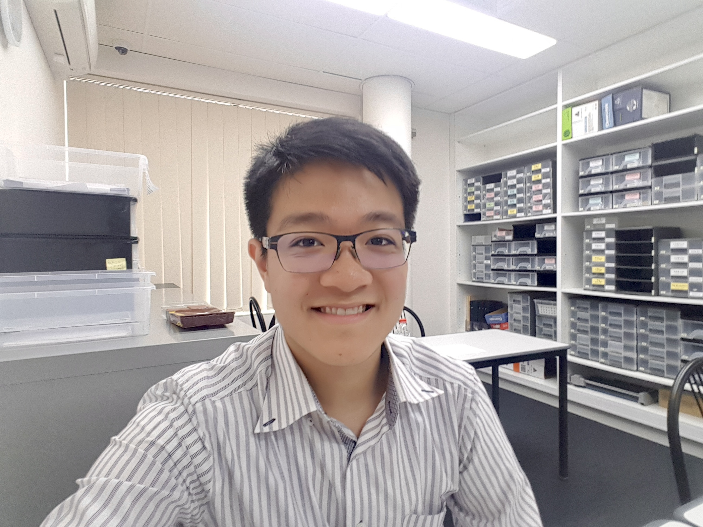
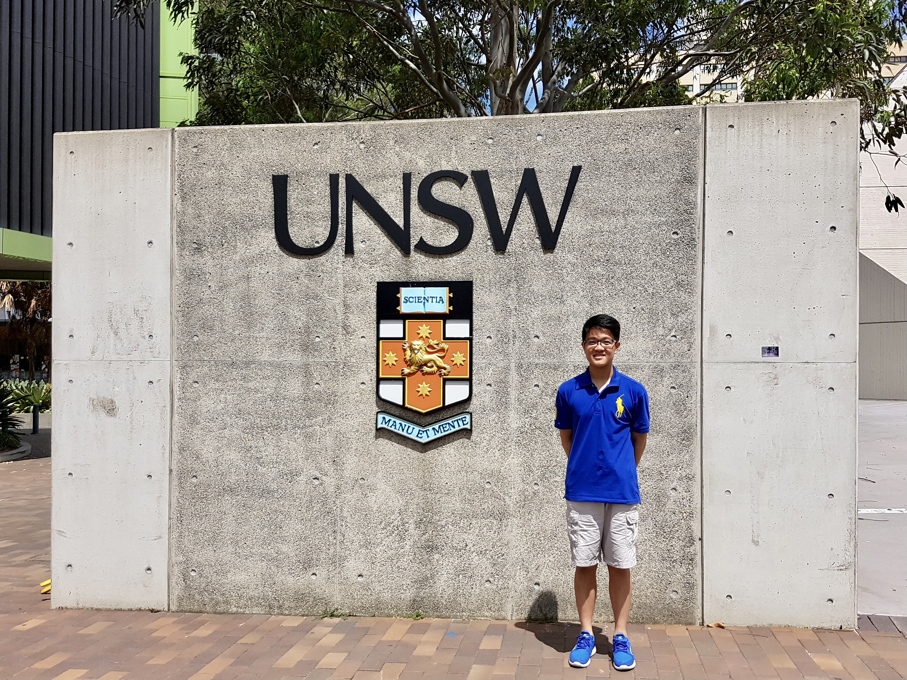
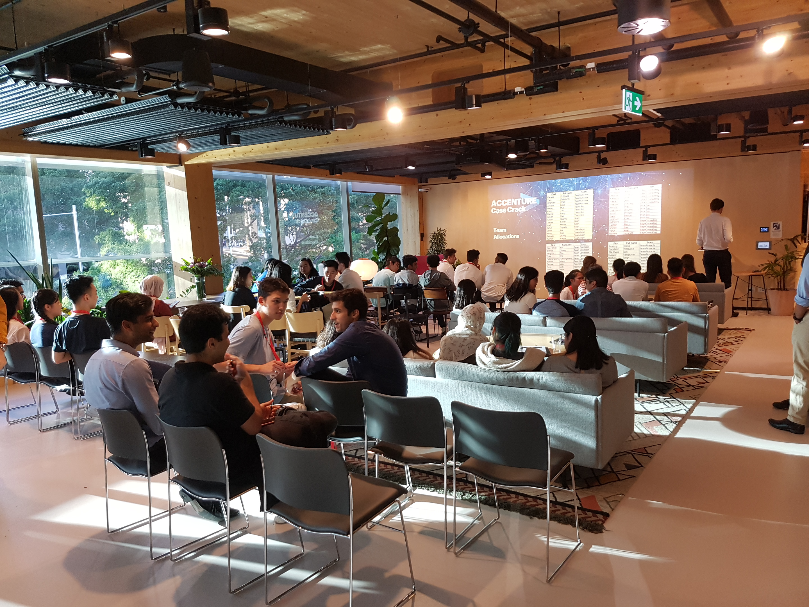
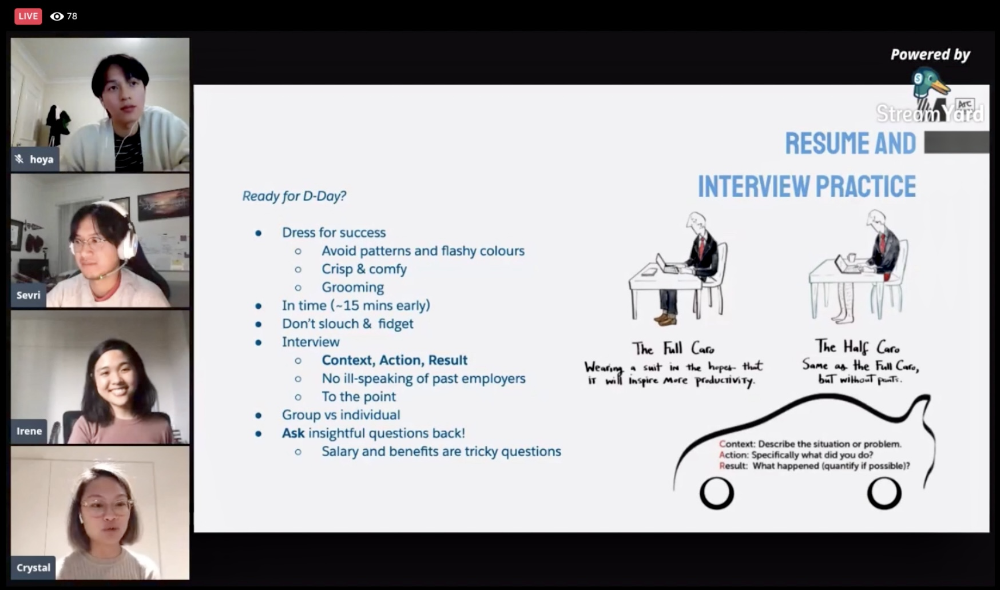
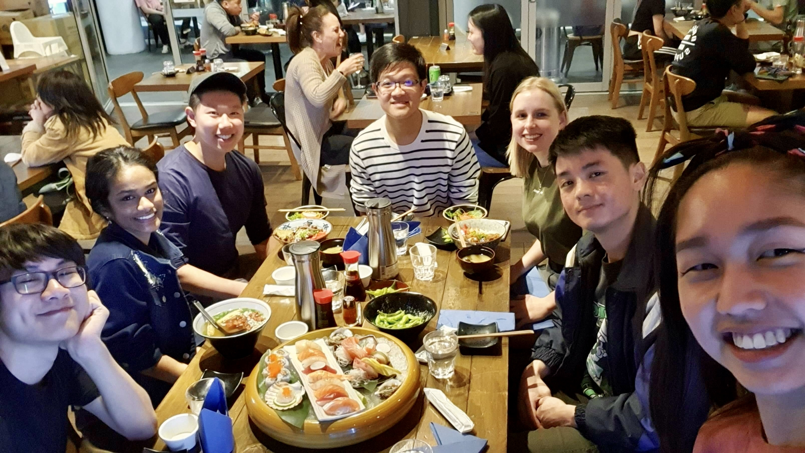
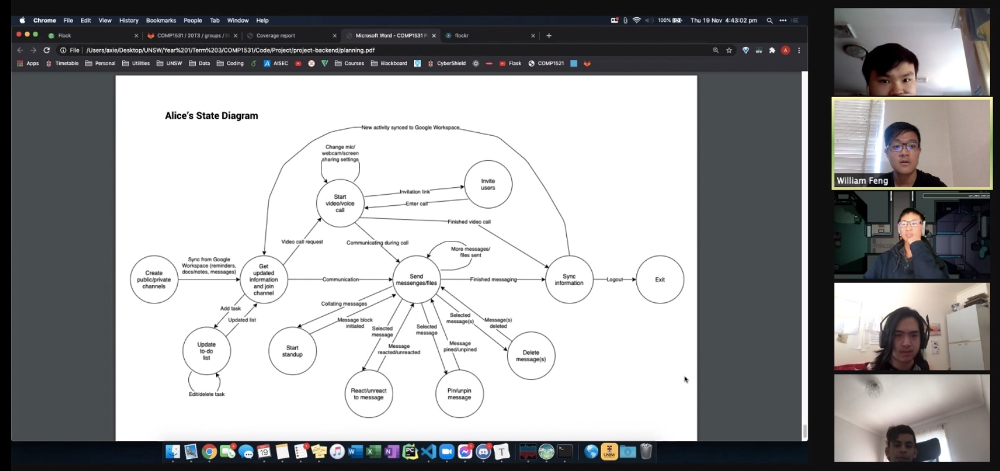
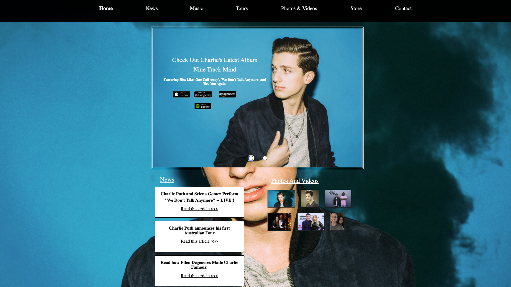

Blogs
Here, you'll find some blog posts that I've written. Being mostly casual in nature, they're personal reflections of past accomplishments and thoughts.
A Comprehensive Guide into Regex for Beginners
Published on 27/05/2021
We all know about how command F (or crtl+F) allows you to instantly search for a particular word within thousands of lines in a file or webpage.
But what if we wanted to search with more parameters on the results?
Is there a more powerful alternative to find matches straight from our terminal?
The answer is YES – and it’s Regex!
What is Regex?
A regular expression (or regex for short) is a string that specify search patterns, and is incredibly useful for extracting information from any text.
It is commonly used for ‘find and replace’ operations, web scraping and checking strings (such as validating emails or testing if there are any spelling errors in a word).
This blog post is a general guide into the basics of regex, with a question set provided at the end for you to test your understanding.
I suggest that you follow along and check out Regex101 or RegExr to write your own regex patterns and then testing them against some strings which you supply.
Regex Syntax
Anchors
Anchors do not match any character, but instead specify the position in a string that the regex should match.
• ^ denotes the start of a string
• $ denotes the end of a string
Let’s say you wanted to match the word ‘he’.
If you just have he as the regex, you’ll have a series of other words returned, since the command will literally return any string that contains ‘he’ anywhere.
Now, if we tried ^he, then we’ll match words like ‘hear’ and ‘hexagon’, since this means we want ‘he’ to appear at the start of the string.
Similarly, if we tried he$, then we’ll match words like ‘loathe’ and ‘backache’ since it now means we want ‘he’ to appear at the end of the string.
Meanwhile, if we have both anchors inside the regex like ^he$, then this means that we want to match all words which are strictly ‘he’.
Character Sets
A character set is used to match a single character out of several specified characters wrapped around square brackets.
• [] to match any character inside the set
• - to denote a range inside a set
• ^ to exclude the characters inside a set (not to be confused with its anchor meaning from above)
For example, [jmy]et will match any of the words: jet, met and yet (again, remember that there are many other words that this regex could match, as there are no anchors).
We can also conveniently use ranges such as [a-z], [D-K] and [0-9] to specify the corresponding letters or digits without having to list them out in an inefficient manner.
Now, what if we wanted all the characters except for a particular few? Say I wanted to match any character instead of the letters 'p', 'q', 'r', 's' and 't'.
In this case, we can write [^p-t], where the caret symbol ^ negates the character set.
You may be wondering: doesn’t the ^ anchor specify the start of a string?
Well, the caret symbol has two meanings depending on the context (whether ^ is the first character of a regex or if it’s inside a pair of square brackets).
Special Characters
So far, we have only been restricted to literal characters, but regex also has a few characters with special meanings that enable this tool to be so effective in its pattern matching.
• . matches any one character (except a new line \n)
• * matches zero or more repetitions of the previous character
• ? matches zero or one occurrences of the previous character
• + matches one or more occurrences of the previous character
• {n} matches n occurrences of the previous character
The period acts as a wildcard that matches any character (could be a letter, digit or symbol).
So b.e can match ‘bee’ and ‘bye’, as well as ‘b5e’ and ‘b!e’ if we are not restricted to a dictionary input.
Now, let’s consider the regex .*: it denotes having zero or more of any character, and this is the most common pattern you’ll encounter when writing regex.
Therefore, ^b.*e$ means that we want to find complete words starting with the letter ‘b’ and ending with the letter ‘e’.
This will return words including ‘be’, ‘beware’ and ‘brilliance’.
A demonstration of this with different test strings using Regex101 can be found in Figure 1 below.
I won’t go into too much depth into some of the other quantifier symbols above, since their usage is very similar to the asterisk above.
 Figure 1: Using Regex101 to highlight the different words that could be matched from a regex pattern
Figure 1: Using Regex101 to highlight the different words that could be matched from a regex pattern
However, what if we wanted to check whether a user created a valid 6-digit pin?
Something like [0-9]+ will not work, since it would match even if the user entered in 4 digits.
One way is to have [0-9][0-9][0-9][0-9][0-9][0-9] but as you can see, this is very tedious and clunky.
Instead, we can specify the quantity by wrapping the number of repetitions around curly braces {} afterwards.
Thus, a simple solution to the given question would be to write [0-9]{6}.
Alternation
Alternation allows for matching a single regex out of several alternatives and can be treated as the union of strings.
• abc|xyz matches either ‘abc’ or ‘xyz’
We use the pipe or vertical bar | symbol to match a group of characters on either side.
This is not to be confused with the character set above, since the characters inside the square brackets are only to denote a single character in the matching string.
Therefore, cat|dog will match either ‘cat’ or ‘dog’ whereas [cat][dog] will match strings including ‘cd’, ‘ad’ and ‘to’.
Note that you will need to use parentheses () if the alternation appears in the middle of a string.
As an example, s(ol|am)e will match ‘sole’ and ‘same’.
If you wrote s[ol][am]e, then ‘some’ would be matched instead.
Escaping
Since some characters have special meanings, we need a way to differentiate between their roles in regex syntax and their literal presence in a string.
This is where escaping comes in.
• \ escapes the meaning of a special character
Let’s say you wanted to return all the phone numbers on a website that exist in the format XXXX-XXXX.
One common mistake is to write the regex as [0-9]{4}-[0-9]{4} since the hyphen actually has a special meaning of indicating a range, and so the hyphen between two brackets makes no sense.
Instead, we need to escape its special meaning by writing [0-9]{4}\-[0-9]{4}.
As a fun fact, you would have to write \\ if you wanted to match a literal backslash, since the first one escapes the special meaning of the second backslash.
Flags
Regular expressions are sometimes delimited with forward slashes / in certain programming languages and contexts.
They may have flags that affect the search, and here, I’ll be briefly describing the uses of the g and i flags.
• /regex/g denotes global matching
• /regex/i denotes insensitive case
By default, a regex will only return the first match, and so if you wanted to return multiple matches, you would need to enable the g flag.
Additionally, if you don't want to specify any difference between uppercase and lowercase in your regex matching, you can enable the i flag.
In Figure 2 below, the first two lines are not matched since the regex pattern is not case-sensitive, and only matches the third line since only the first match is returned.
 Figure 2: Using Regex101 to highlight the matching when there are no flags enabled
Figure 2: Using Regex101 to highlight the matching when there are no flags enabled
Questions
At this point, hopefully you’ve acquired a basic understanding of how to write regular expressions.
Now it’s time to put your skills into practice. Don’t worry if nothing really clicks just yet, as I’m sure you’ll get the hang of it once you attempt some of these questions.
First of all, click here to download a text file of the English dictionary.
Note that there are many variations to a dictionary file, so please make sure that you download this version to correctly answer the following questions.
Open up a new terminal and move to the directory containing the dictionary text file that you’ve just downloaded.
Directly from the command line, we use a command called grep in order to find matches using the regex.
As a general tip, we should also include the -E flag (or egrep for short) so that we can handle extended regular expressions with special characters.
Then, the regex should be enclosed in single quotation marks (we don’t need to delimit with slashes in this case), followed by the filename.
Therefore, the basic format for you to answer the following questions for a certain regex should be: egrep ‘regex’ dictionary.txt
We can find the number of occurrences from the match by piping (adding a vertical bar to) the output with wc -l, which prints the number of lines.
To display only the first or last ‘k’ results, pipe it with head -n k or tail -n k respectively, where ‘k’ is 10 by default.
For example, if we wanted to find out the number of words containing the letters ‘st’ consecutively, it would be written as: egrep 'st' dictionary.txt | wc -l
Now, it’s your turn! Have a go at answering the following questions. To make it slightly easier for you, I have provided the expected output beneath each of these questions.
If you are unsure how to do at a particular question, scroll down to find the sample solutions (hide them before attempting a question).
1. How many words begin with the letter ‘z’?
1043
2. How many 3-letter words end with ‘at’?
16
3. How many words have exactly 20 letters?
204
4. How many words have the letter ‘q’ followed by a letter that is not ‘u’?
67
5. How many words do not have any vowels?
219
6. How many words have the double letters ‘ll’ or ‘mm’ or ‘nn’?
16954
7. How many words begin with a letter from the first half of the alphabet (‘a’ – ‘m’), followed by a letter from the second half of the alphabet (‘n’ – ‘z’), and then continues to alternate between letters from the first and second half of the alphabet?
927
8. List the first 10 words that begin with the letter ‘t’, with the letter ‘w’ as the 3rd last character.
takeaway
takedowns
tallowed
tallower
talweg
taniwha
tarrowed
tattowed
tawas
tawed
9. List the last 6 words with 5 vowels that appear in the order ‘a’, ‘e’, ‘i’, ‘o’, ‘u’.
sacrilegiousnesses
sarraceniaceous
supercalifragilisticexpialidocious
ultrareligious
ultraserious
valerianaceous
10. List all words with strictly 5 vowels that appear in the order ‘a’, ‘e’, ‘i’, ‘o’, ‘u’.
abstemious
abstemiously
abstentious
arsenious
caesious
facetious
facetiously
Sample Solutions
Note that we should technically use [a-z] instead of the . wildcard to specify that we want to begin with a letter, but it’s fine in this case since we are in the context of a dictionary (i.e. there would be no numbers or other symbols anyways).
Another comment is that we do not need any flags for this purpose, since all the words are on a separate line and in lower case.
Conclusion
If you could make it all the way, especially as a beginner – congratulations!
Well done for having an attempt at the questions, and don’t be let down if you weren’t able to complete some of them (after all, they’re supposed to be challenging).
Regex is such a powerful tool, so of course, the content covered in this guide has only been the tip of the iceberg.
If you have found it interesting, please take the effort to dive deeper into aspects such as bracket capturing, greedy matching, and lookaheads.
Be sure to check out some of the provided links below for further references, examples, and more advanced topics.
• https://www.sitepoint.com/learn-regex/
• https://medium.com/factory-mind/regex-tutorial-a-simple-cheatsheet-by-examples-649dc1c3f285
• https://www.keycdn.com/support/regex-cheatsheet
• https://www.regular-expressions.info/tutorial.html
• https://www.rexegg.com/regex-python.html
I uploaded this article to the UNSW DataSoc website, and can be accessed at this link.
How You Can Get Involved In 'The Sexiest Job of The 21st Century'
Published on 25/03/2021
Half the term has passed, and you’re scrambling to watch the week two lectures at 2x speed, contemplating your life choices because you’re struggling to keep up with the boring burden of your uni degree.
Or maybe you’re that top HD student who goes exploring beyond the scope of the course outline, with plenty of time for work, socialising, and making yourself competitive careers-wise....
Regardless, data science is a field that everyone should consider in this day and age.
Why you should be interested in Data Science
Don’t get me wrong – by no means am I telling you to switch degrees (totally unbiased, as I don’t study data science myself).
But learning some related skills would be incredibly useful for your future aspirations.
You might argue: “why would I bother doing that if it’s not even relevant to my degree?”.
Well, data science has penetrated into all industries as everything is data-driven in this digital world.
With ever-increasing amounts of data around us, there’s a high demand for people who can interpret this raw data and generate meaningful insights.
If you don't believe me, just Google “why study data science”, and you’ll discover numerous reasons why it’s definitively labelled ‘the sexiest job of the 21st century’.
Sounds too good to be true? Overhyped?
It may be challenging, but certainly not mundane, as this relatively new field is 2nd in Glassdoor’s 2021 rankings of the top jobs in the US.
Consequently, many jobs out there require some extent of data literacy, and the reality is that employers won’t really care about your degree much.
Instead, you will stand out amongst other candidates if you’ve upskilled for your desired role, and of course, demonstrate your passion.
“Without big data analytics, companies are blind and deaf, wandering out onto the web like deer on a freeway.” (Geoffrey Moore)
What are some skills that you should know
I’m no expert, so I’d highly recommend reading this article here, which is a complete beginner’s guide to data science.
Although this field is an amalgamation of computing, mathematics and business, the career pathways do not require the same level of expertise.
Having said that, it would be worthwhile to have some fundamental knowledge in:
• Programming (Python and R, with their included libraries, are most commonly used for data wrangling and analysis)
• Statistics (maths forms the foundation of building various models and performing quantitative analysis)
• Data Visualisation (representing data in a graphical format is necessary to easily identify and understand trends)
All this might sound overwhelming at first, especially if you’re trying to learn it independently – but it’s all part of the learning process.
There are several free online courses (such as Coursera, Udemy, Udacity) where you can go at your own pace.
Once you’ve gained proficiency in an area, try to build a few personal projects.
The cool thing is that you can apply your skills and draw conclusions from a dataset of your own liking.
At the same time, it’s redundant getting carried away with the whole technical skills aspect.
Many students undermine the significance of effective communication, yet it is important to be able to clearly articulate your findings in a concise manner to both technical and non-technical audiences.
Also, while processing databases and visualising dashboards is ultimately the purview of a data scientist, it’s not something that we should drill into initially.
For the layman, the focus would be more on intellectual curiosity, since the quality of one’s insights to discover those underlying truths is often motivated by their mindset of constantly asking the question “why”.
Final Thoughts
Feeling scared at the workload?
Again, don’t be let down, particularly if you’re not studying a data science related degree – it’s an extraordinary step you’re taking just to obtain a glimpse into the fascinations of this broad profession.
You’d be surprised at the number of people who are data illiterate and fail to interpret the most basic graph.
However, the next time you procrastinate (which is probably multiple times a day for the majority of us…) just remember one thing: it’s never too late to start getting involved with a job of the future!
I uploaded this article to the UNSW DataSoc website, and can be accessed at this link.
First Year of Uni Reflection - Part Three
Published on 31/01/2021
I hope you enjoyed this series of reflections regarding my first year of university.
Now how can I finish off without discussing what I’ve been doing during my spare time amidst an unimaginable year...?

First of all: work.
After completing my final HSC exam and had the time of my life aboard a two-week cruise on the Majestic Princess, I didn’t want to spend three whole months with absolutely zero productivity.
I was successful with my teaching demonstration at Dr. Du Education and was given the job. I started with marking students’ quizzes and homework, and when the school term began, I had the responsibility of teaching mathematics to a small class of Year 9 students.
Meanwhile, I was also fortunate to have landed a permanent job at The Brain Education.
There, I taught English to classes of 15 Year 12 students, as well as having a casual role of marking and teaching private students.
How did I feel?
For sure, it was pretty nerve-wracking when it first started, especially when I had to control a whole room of inquisitive yet stressed students about to undertake the HSC.
But that changed quickly when I empathised and established stronger connections with all of them. The friendly atmosphere made everyone feel comfortable, and it was satisfying whenever I could think of analogies or relatable examples to help them better understand complex concepts, knowing that I made a difference with their studies.
Teaching certainly improved my self-confidence and communication with others.
Then there’s exercise.
Never would I have imagined that I would proactively walk 30 minutes to the beach and then go for a 5-10km run.
But when I tried doing so, the whole sensation of having the breeze blowing against my face, or witnessing the different colours of the sky as the sun set was just wonderful.
It wasn’t always easy to stay committed with a beach run on a consistent basis, but I eventually grew more disciplined.
It was a relaxing (though I’d say sometimes it was more tiring) way to keep healthy, admire the beauties in nature and allow my eyes to take a break from staring at a computer screen all day.
Anything else that I did whilst keeping COVID-safe?
Well, I didn’t really touch the piano ever since I stopped my weekly volunteering at two aged care centres at the end of 2019.
But then I watched this Korean drama called ‘Crash Landing on You’ and become completely engrossed by one of its theme songs ‘Song For Brother’.
I’ve uploaded a video of myself playing on the media page, and now practising piano is something that I do daily.
Furthermore, I learnt to cook some basic meals for my family, and personally now, I feel that dishes prepared by myself taste the best!

COVID-19 has affected every one of us in some way or another.
But I am incredibly lucky to have escaped its devastating ramifications unlike many other families worldwide.
I’ve kept myself busy in a year that likely stagnated most people’s lives.
From balancing uni studies with society volunteering, work, exercise and hobbies during quarantine.
I appreciate everything that I’ve experienced to date, yet I guess it could’ve been much better in the absence of the pandemic.
2020 was indeed a unique way to spend the freshman year at university, and I won’t ever forget it!
Let’s now cross our fingers that life will be back to normal for everyone soon! 🤞🙏😄
{kind=link}
{kind=link}
{kind=link}
First Year of Uni Reflection - Part Two
Published on 28/01/2021
Continuing on from my previous blog, I’ll now be focusing on my society involvements at UNSW.
All the events back in high school were organised by teachers; now everything is done by students.
Little did I know that there was so much work necessary in organising an industry Q&A session, just as an example...
– from emailing potential sponsors, to negotiating availabilities, to registering student interest, to having rehearsals and finally to hosting the live event.
It was one thing to attend such events and another thing to be in charge of running them.
I’d say that being a significant part of three societies over the past year was one of the best decisions I’ve ever made!

For a first year like me back in 2020, I didn’t know much about the field of computer/data science in the real world.
That all changed when I attended these society events, with invaluable opportunities such as personalised mentoring sessions from employees at marketing-leading companies, resume tips and mock interview sessions
I also undertook a three-month leadership program ran by the UNSW Management Society,

with entrepreneurs sharing their wisdom, leadership training workshops and even a volunteering component where I maintained an ongoing conversation with aged care residents via the form of a letter.
Of course, societies aren’t just about professional development – there were also chill games nights, speed friending and Python programming tutorials.
They definitely made the first year uni life enjoyable and were something to consistently look forward to during each term.
Now at the end of the first week at uni, subcommittee applications opened and the thought of making a contribution to a recognised societies excited me.
Without much knowledge, experience or expectation, I had written an application for the role as an IT/Publications subcommittee member at UNSW Data Science Society.
Thankfully, I got through, then passed the interview round and was successful – and from there, it was just an amazing ride.
Until August, my team collaborated in undertaking a major revamp for the website, with weekly online catchups to review each other’s progress and provide suggestions for improvement.
It was so interesting learning effective Git practices as well as the Bulma and Jekyll frameworks.
We would also have the responsibility of publishing newsletters (and later blogs after it was introduced in the new website) on behalf of DataSoc, where we’d advertise upcoming events and captivate readers with worldwide data discoveries.
Towards the end of the year, I was involved in conducting analytics and create charts to analyse the trends in user engagement and activity to try improving the overall outreach of the society.
It was a truly enlightening experience, and that’s why I’ve continued my involvements this year as a director to lead a group of enthusiastic students!
I realise that this post will get quite long-winded, so I’ll try being more concise from here on in.
Since I had a lot of free time with no physical classes for a large portion of the year, I decided to do more volunteering and give back to the lively student community.
Therefore, I joined UNSW Cloud Society as a member under the business development portfolio, where I had the task of securing partnerships.
This time, I acquired skills such as drafting professional emails, talking to guest speakers and hosting events that would be live streamed to students.
Additionally, as an events coordinator at Real Skills Education (a non-for-profit organisation), my role was to initiate workshop ideas, creating the presentation, writing a script and finally presenting it to students across multiple universities.
This really nourished my confidence and public speaking, as I refined the flair of my delivery and became familiar with facilitating live Q&A sessions.

While these societies allowed me to develop myself personally and nurture soft skills that are adaptable in the workplace, the whole process of meeting new people was just as pleasant.
Due to the pandemic, most gatherings were held online, but we did also have a few in person dinners with each society.
DataSoc planned a carpool to travel to Seacliff Bridge and even a road trip during the holidays.
Despite the fact that there was an enormous time commitment on my end attending all meetings and taking initiatives whenever possible, looking back, I believe it was (and will continue to be) all worth it!
{kind=link}
{kind=link}
{kind=link}
First Year of Uni Reflection - Part One
Published on 26/01/2021
It’s only been a day since I posted yesterday, but I mean I’m going to be busy with uni starting again soon.
On that note, this will be the first of a three-part post where I reflect upon the learning during my first-year university experience.
“For many, young and old, 2020 will be the toughest year of our lives.”
Who could’ve imagined that ...
this global pandemic would occur at the beginning of the decade and impact so many lives?
The year when I step into adulthood and should be experiencing the thrilling uni life with no worries in mind.
However, I’ve got to admit that I am grateful about my situation in light of this unprecedented event and honestly, I felt positive throughout the year.
 Nervousness was the word I’d use to describe my initial emotions as I sheepishly entered the hall for my 9am lecture for Discrete Maths on 17 February 2019.
But that subsided immediately as I started conversations to students around me and already, I felt more relaxed in that supposedly daunting environment.
The lecturer was also very engaging, and I was relieved that the content being covered wasn’t excessively difficult during my first two hours studying at UNSW.
During that first week I was amazed by how much I had learnt, especially in computer science, where I had almost no prior experience.
The social atmosphere was also great, as I met a many new people and had group peer mentoring sessions providing useful tips and tricks.
It was exhausting too, having 20 contact hours on campus, social gatherings and working for 17 hours as a tutor at a company.
Nervousness was the word I’d use to describe my initial emotions as I sheepishly entered the hall for my 9am lecture for Discrete Maths on 17 February 2019.
But that subsided immediately as I started conversations to students around me and already, I felt more relaxed in that supposedly daunting environment.
The lecturer was also very engaging, and I was relieved that the content being covered wasn’t excessively difficult during my first two hours studying at UNSW.
During that first week I was amazed by how much I had learnt, especially in computer science, where I had almost no prior experience.
The social atmosphere was also great, as I met a many new people and had group peer mentoring sessions providing useful tips and tricks.
It was exhausting too, having 20 contact hours on campus, social gatherings and working for 17 hours as a tutor at a company.
I won’t go into too much detail into every single event that happened over the past year as that’ll obviously make these blog posts overly long.
But after a remarkable computer science camp, the extent of the pandemic forced all lessons to be shifted online.
Three weeks (with a few optional in person classes in term three) was all the time I had on campus.
Remote learning was another completely new experience, with lectures being live streamed and recorded, and tutorials/laboratories being held on platforms like Blackboard Collaborate and Zoom.
This was great as it allowed us to have our questions answered by professors real-time, and the breakout rooms for problem-solving sessions to be conducted in a personalised team format.

You might be wondering whether I preferred in-person or online classes? Well, both options have their advantages.
For practical sessions like computer science problems, in-person classes are definitely better as everything was explained with greater clarity.
On the other hand, online classes are much more convenient as I could learn straight from home, and there’s also the possibility of pausing, repeating and watching recordings at any time.
However, remote lessons are sometimes affected by Internet disruptions, and more drastically, I found it harder to keep motivated studying.
The poor mindset that “Oh, I’ll just watch the recordings later”, which lead to constant procrastination, took a while for me to neglect and instead stay on top of my work.
The social aspect was also eliminated, as it was more awkward trying to stimulate conversations with students whom you’re less familiar with via text as opposed to via speech.
So while I’m totally fine with both options and would like to adopt a mixed approach, I would slightly lean towards the more traditional face-to-face method of learning if that’s appropriate given the current circumstances.
University is truly different from high school.
There’s a lot more freedom, which means it’s up to us students to stay responsible with our completion of homework, reminders about deadlines and revision for upcoming exams.
I genuinely believe that it’s a more vibrant environment as I can meet students from diverse educational backgrounds and there are just so many events planned throughout the year.
Stay tuned to my next two posts where I continue this reflection of 2020, but delve more into uni societies, work and quarantine life.
{kind=link}
How this website came about
Published on 25/01/2021
Welcome to my first blog post!
“So tell me about yourself…” This is one of the most generic interview questions and I guess that’s fair enough, because the interviewer hasn't even met you before.
But how should I answer that? What’s a way that really makes me stand out? Would being an average student studying computer science... just like every other candidate really be ideal?
Now I haven’t had many interviews (or at least formal ones) and in relation to everything that I say overall, please note that these are only the opinions of an individual who still has much to learn and experience in life.

After a year of university, I realised that in order to make myself career-ready and to distinguish myself in all those invaluable opportunities, I had to do someone different – something that others might not have the motivation to do.
I had a bit of experience in web development back in Year 9 when my team of three created a website regarding a music artist (Charlie Puth) for an assignment. It was really interesting self-learning back then, so I thought ‘how about I create a personal website’.
Like the fact that I can hit two birds with one stone – to start some sort of personal investment and more importantly, to have fun exploring deeper into my inner passions.
Basically, as soon as the new year rolled over, I decided to start on this major project and watched a few YouTube tutorials on how to get a website running.
I cannot stress the significance of making a plan, because that definitely made the development a lot easier – otherwise I wouldn’t even know where to start.
I started off with a template with some basic HTML and CSS and just worked on this website bit by bit.
This was in conjunction with my other commitments such as tutoring students, volunteering across three different societies, exercising and catching up with friends.
Did I enjoy it? Of course I did!
For sure, it was time consuming and even intermittently frustrating when I just couldn’t get an element looking the way I wanted.
But it was a truly rewarding process as I’ve always had an inner spark whenever I faced a challenge.
I’ve refined my abilities in HTML, CSS and even learnt a new language, JavaScript, in the process, so yeah, I’m especially thankful that such an idea came to my mind just less than a month ago!
Hopefully, this website will allow everyone – not only the current network of people I know, but also to my future employers – to know more about me.
Here’s to more blog posts being published 😅!
{kind=link}